Symbol Glossary¶

Total number of nodes.

Length of segment between two nodes.

Position.

State.

Time.
- 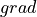
Finite derivative of
w.r.t. .
System flux function.

Spatial and state dependent forcing function.

Positional and state dependent forcing function.
- 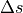
Storage change w.r.t. previous time step. Matrix of dimension 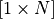.
- 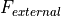
Accumulation of all point and spatial fluxes. Matrix of dimension .
- 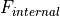
Internal fluxes in the system. Matrix of dimension .
- 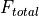
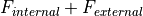, sum of all forcing fluxes, excluding the storage change forcing.
- 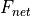
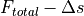, net fluxes in the system.
- 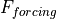
, sum of all forcing fluxes, including the storage change forcing.

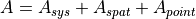, sum of all jacobian matrices. Matrix of dimension .
- 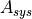
Jacobian system flux function.
- 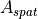
Jacobian spatial state dependent forcing functions.
- 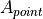
Jacobian positional state dependent forcing function.

Node number (1 indexed).
- 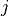
Index of spatial state dependent forcing function number
 .
.
Index of positional state dependent forcing function number
 .
.Total number of spatial state dependent forcing functions.
Total number of positional state dependent forcing functions.
- 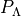
Legendre polynomial of degree
 .
.Gaussian Quadrature degree.

Index of specific Gaussian quadrature position
 and weight
and weight  .
.
All absolute positions of the Gaussian integration procedure within the domain.
All positions of the Gaussian integration procedure for degree
.All weights of the Gaussian integration procedure for degree
.- 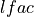
Distribution factor for pointflux
towards the nearest left node.- 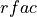
Distribution factor for pointflux
towards the nearest right node.left node of the segment.
right node of the segment.